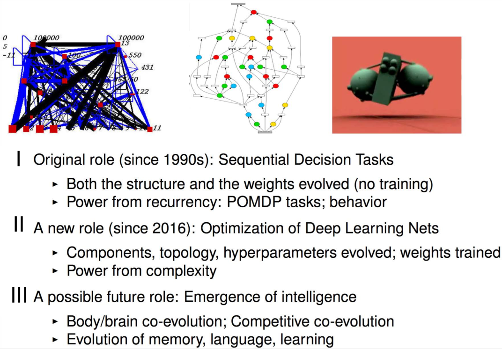
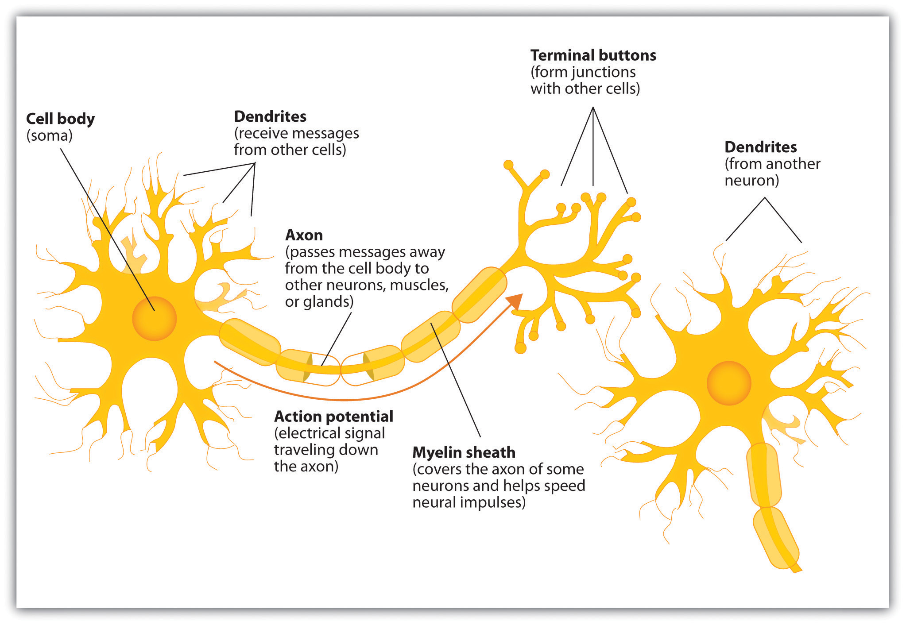
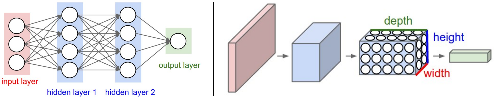
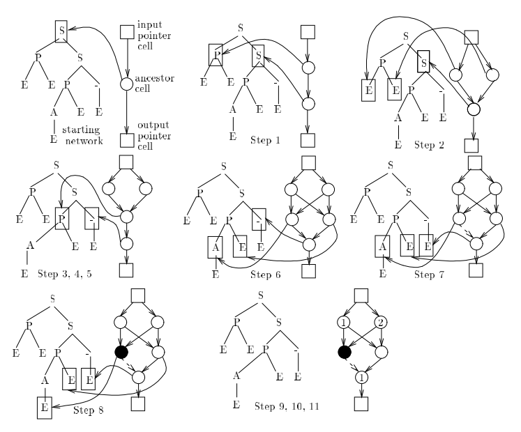
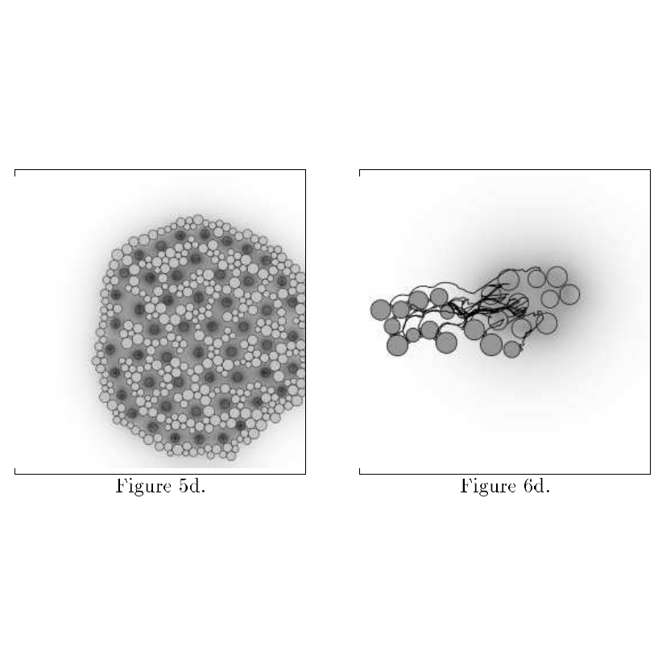
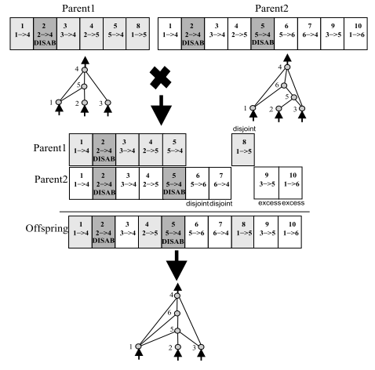
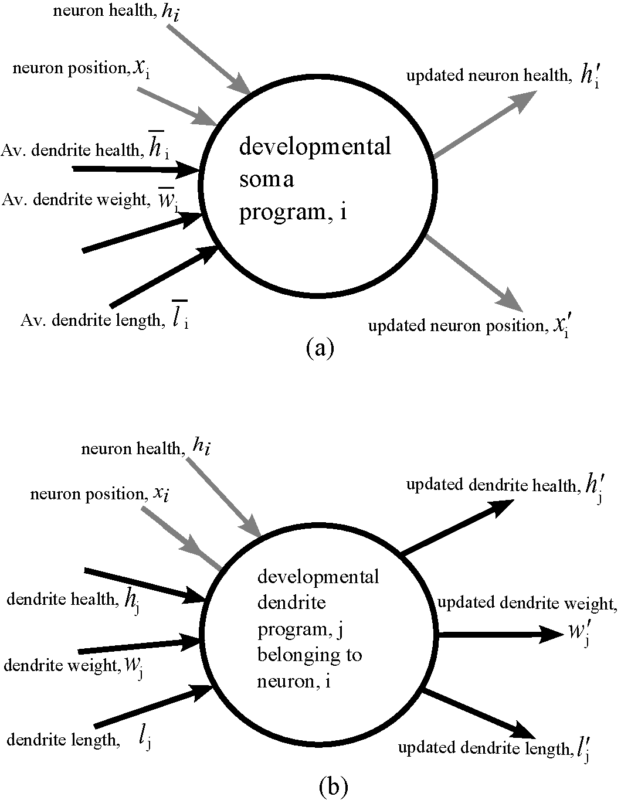
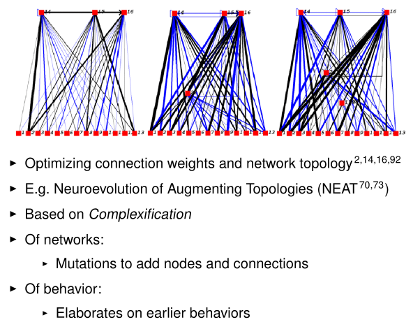
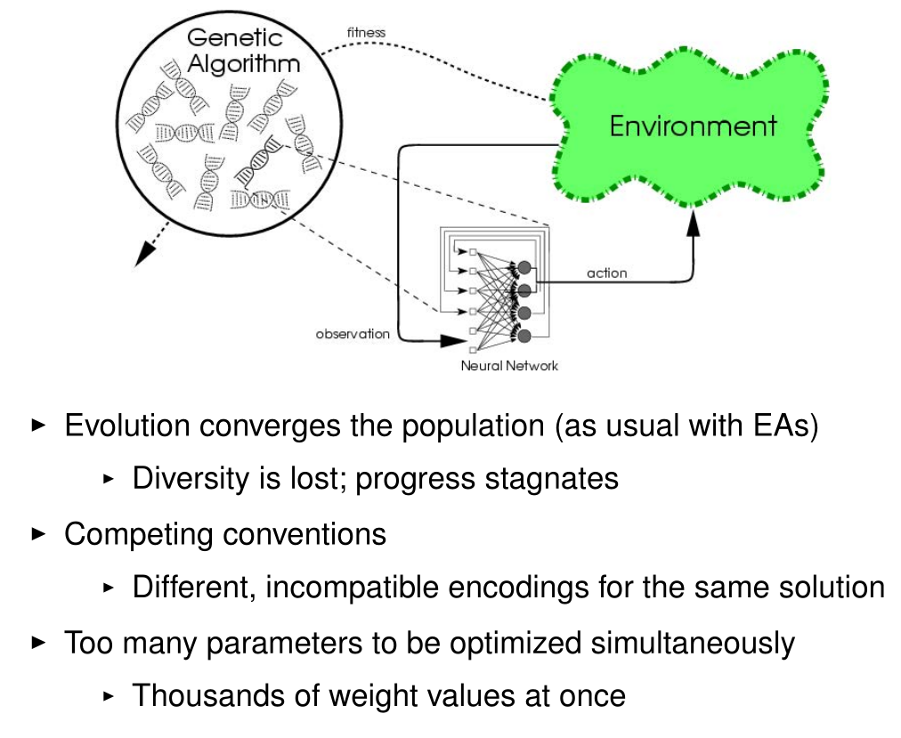
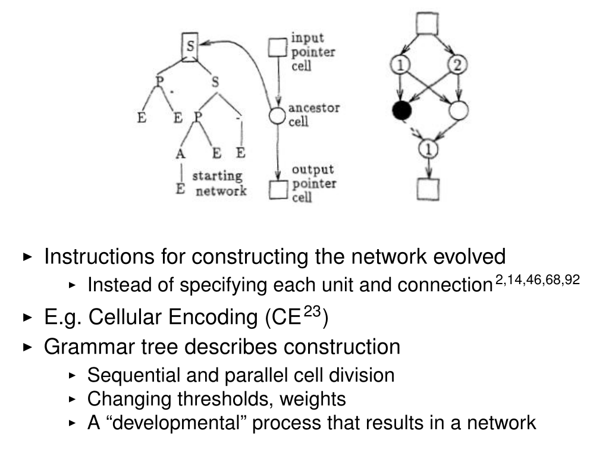

Evolutionary Computation
Evolution of Neural Networks
Motivations for neuroevolution

Miikkulainen, Risto. "Evolution of neural networks." Proceedings of the Genetic and Evolutionary Computation Conference Companion. 2017.
Neuron Model

C. Stangor and J. Walinga. Introduction to Psychology.
[BC open textbook
collection]. Flat World Knowledge, L.L.C., 2015.
Artificial Neural Networks


cs231n.github.io
Neuroevolution
|

Gruau, Frederic, and Darrell Whitley. "Adding learning to the cellular development of neural networks: Evolution and the Baldwin effect." Evolutionary computation 1.3 (1993): 213-233. |

Fleischer, Kurt, and Alan H. Barr. "A simulation testbed for the study of multicellular development: The multiple mechanisms of morphogenesis." 1994 |
Neuroevolution
|

Stanley, Kenneth O., and Risto Miikkulainen. "Evolving neural networks through augmenting topologies." Evolutionary computation 10.2 (2002): 99-127 |

Miller, Julian F., Dennis G. Wilson, and Sylvain Cussat-Blanc. "Evolving Developmental Programs That Build Neural Networks for Solving Multiple Problems." Genetic Programming Theory and Practice XVI. Springer, Cham, 2019. 137-178. |
Neuroevolution

Miikkulainen, Risto. "Evolution of neural networks." Proceedings of the Genetic and Evolutionary Computation Conference Companion. 2017.
Evolution of Neural Structure

Miikkulainen, Risto. "Evolution of neural networks." Proceedings of the Genetic and Evolutionary Computation Conference Companion. 2017.
Problems with Neuroevolution

Miikkulainen, Risto. "Evolution of neural networks." Proceedings of the Genetic and Evolutionary Computation Conference Companion. 2017.
Direct Encoding
Neural network structure or weights are directly encoded in genome: NEAT
Stanley, Kenneth O., and Risto Miikkulainen. "Evolving neural networks through augmenting topologies." Evolutionary computation 10.2 (2002): 99-127
Indirect Encoding
Neural network structure or weights are the result of developing the genome: Cellular Encoding, HyperNEAT
Miikkulainen, Risto. "Evolution of neural networks." Proceedings of the Genetic and Evolutionary Computation Conference Companion. 2017, from Gruau, Frederic, and Darrell Whitley. "Adding learning to the cellular development of neural networks: Evolution and the Baldwin effect." Evolutionary computation 1.3 (1993): 213-233.
Exercise 2
Work on your inverted class presentations!